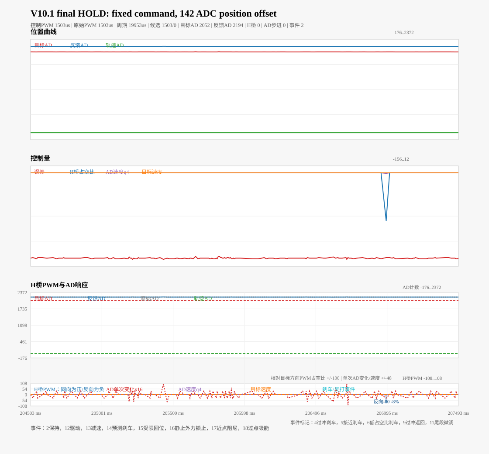

本轮采集已结束，板上为 P50 V10.1。应用读回及保留参数区校验通过。用户明确要求不回退 V9.6。
V10.0 故障时 CPU、SysTick 和 PWM 捕获仍运行，但 SRAM 参数块尾部出现栈/代码地址，input_timeout_ms=0，参数 CRC 失效，运行状态 BAD、H 桥滑行。这解释了按复位可短暂恢复、随后失去响应的现象。主要怀疑显示格式化/控制嵌套压穿栈；尚无精确到某一条写指令的跟踪证明。
V10.1 去掉重型 snprintf、显示局部缓冲320→160B、调试ring35→16，并保证至少1536B栈；静态RAM1976→1480B，可用栈1096→1592B。原版H桥安全滑行和PID不变。
| 检查 | 结果 |
|---|---|
| 连续监测 | 60 次 / 64.47 秒，核心持续 Running |
| 参数块 | 60/60 CRC有效，整个参数块不变，输入超时一直100ms |
| PWM捕获 | 有效帧约49.99Hz，计数持续增加 |
| 结束后补读 | 运行到约337秒仍CRC有效、timeout=100ms；没有读到原来的参数损坏 |
| 帧质量 | 粗采60帧中2帧误差不一致，剔除；补采179帧全部满足error=target-feedback |
前段中位保持约23秒时反馈2049..2052，误差0..5 ADC。往返结束后，3秒补采目标2051..2055，反馈2192..2196，误差−144..−139，178/179帧为HOLD且duty=0。最后单次补读又见目标2051、反馈2230、误差−179、HOLD/duty=0；两个补读窗口之间未连续记录，不能据此认定是静态漂移。
当前 v7_static_lock_band=Rel+Hbd*14，默认16+16*14=240 ADC；过冲HOLD带也是240。程序允许很大的到点偏差留下，停住不等于准确定位。还抓到1502→1503us变化后一个event12/duty=−80样本，随后回HOLD；命令门控仍可让1us小变化短暂穿过保持路径。178个零输出样本也不能证明有主动锁止：HBridge_Brake实际仍为Coast。
下一步应对HOLD进入/退出和微小命令处理逐项修正，并用高频完整动作记录核对刹车/尾段。每秒1次的完整性检查不足以判定各次峰值过冲或给PID定参数。本版未宣称长期稳定/锁力达标，下一修改版按V10.2编号。
3秒保持曲线 · 完整统计 · 参数与控制原始记录 · 保持原始CSV
